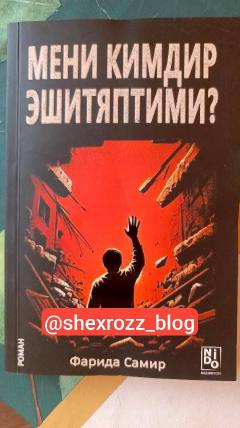

YSYosh yigitning noto'g'ri do'stlar ta'siriga tushib qolishi haqidagi ta'sirli hikoya.
Ushbu asar yosh yigit Turgayning hayoti va uning yomon ta'sir ko'rsatuvchi do'stlari bilan bo'lgan munosabatlari haqida hikoya qiladi. Voqealar rivoji qahramonning oilasi bilan bo'lgan ziddiyatlari va uning tanlagan noto'g'ri yo'li atrofida kechadi.